Игра начиналась как аккуратное исполнение письма: три стороны, четыре зоны, домики деревяные, отрубленные руки и корованы, которые можно грабить. Шутка работала ровно один вечер — потом мир заканчивался, потому что заканчивалась карта.
Дальше всё это перестало быть одной выученной локацией. Ниже — что появилось с тех пор, по-человечески и без единого слова про то, как оно устроено внутри.
Что умела самая первая версия
Зона людей, зона императора с дворцом, зона эльфов с густым лесом и зона злого со старым фортом. Один бесшовный мир, у каждой стороны свой угол и три задачи. Можно было слушаться командира или быть самому себе командиром, ходить на набеги, покупать и т. п., терять руки, ноги и глаза, ставить протезы и, разумеется, грабить корованы.
Всё это никуда не делось. Просто теперь это не весь мир, а стартовый набор.


Мир перестал быть выученным наизусть
Перед началом можно ввести любое число или слово: памятную дату, кличку коня или «джва года». Из этого собирается карта 5×5 — холмы, биомы, поселения, дороги, река и мосты. У каждой стороны своя точка старта, своя цепочка целей и своя финальная крепость.
Одинаковый seed всегда даёт одинаковый мир, так что удачной кампанией или особенно проклятым мостом можно поделиться с другом и посмотреть, кто первым дойдёт до финала. Карта открывается вокруг героя: сначала известен один квадрат из 25, соседние земли выходят из тумана войны по мере путешествия.
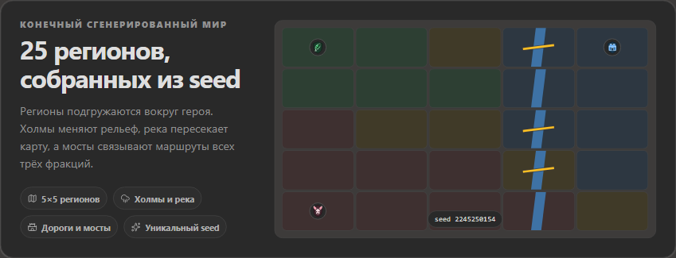
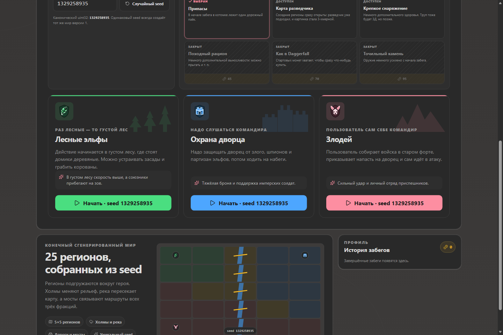
Мир живёт, пока пользователя нет рядом
Самое крупное изменение: остальные 24 квадрата больше не ждут, пока туда кто-нибудь придёт. Фракции давят друг на друга и отжимают территории, зверьё выходит из леса и жжёт поселения, корованы едут по дорогам и не всегда доезжают. Всё это происходит само.
В углу экрана появилась «Хроника» — короткая сводка о том, что случилось в уже открытых квадратах: где сменился хозяин, чьи домики догорели, какой корован ограбили раньше пользователя. Карта тоже честно раскрашивается: спорные квадраты помечены мечами, разорённые — огнём.
Из этого следует неприятное, но интересное: можно опоздать. Прийти на пепелище, застать мародёров на углях, обнаружить, что в лавке больше некому торговать, а цены в соседнем поселении выросли, потому что до него не доехал обоз. И наоборот — успеть и отбить набег.
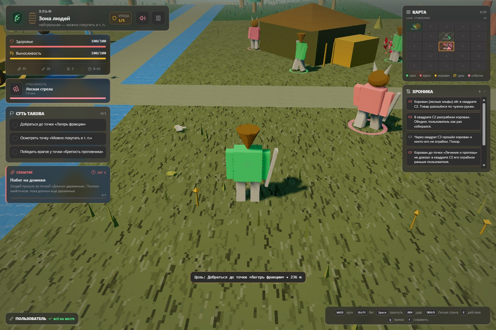
Раньше мир начинался там, где стоял пользователь. Теперь пользователь — просто один из тех, кто по нему ходит. Причём далеко не самый организованный.
Корованы поехали сами
Корован больше не декорация, которая наматывает круги для галочки. Он выезжает из одной точки, едет по настоящим дорогам в другую, везёт товар и меняет цены там, куда доехал. У него есть охрана, которая дерётся за телегу, а если из кустов выходит что-то слишком зубастое — бросает её и убегает.
Поэтому теперь корованы можно не только грабить, но и опаздывать на них. Прийти к телеге и прочитать «Корован уже ограбили» — это отдельный, очень обидный жанр.
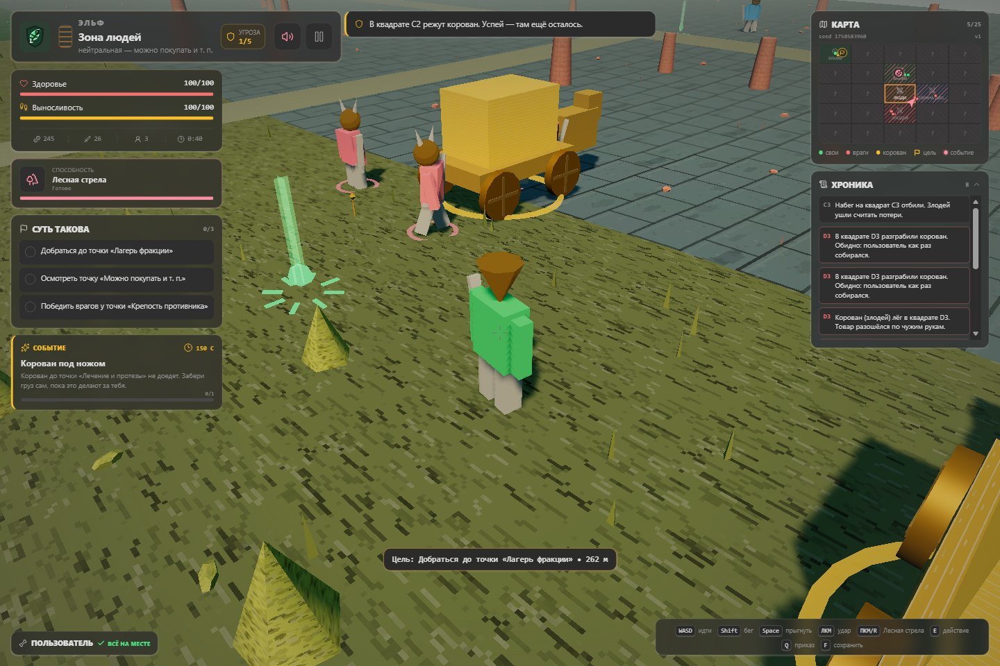
В лесу завелось зверьё
Кроме трёх сторон конфликта в мире появились волки, кабаны, медведи и тролли. Они враждебны всем сразу: и эльфам, и охране дворца, и злодею, и мирным жителям. Стая волков наваливается толпой и разбегается, когда ломается; кабан разгоняется и не умеет поворачивать; тролль вообще не интересуется людьми — он разбирает поселение.
Ночью и в непогоду зверьё смелеет, под крепкой властью — притихает. На карте у него своя метка, а в «Хронике» — свои строчки про то, чьи домики этой ночью перестали быть деревяными.
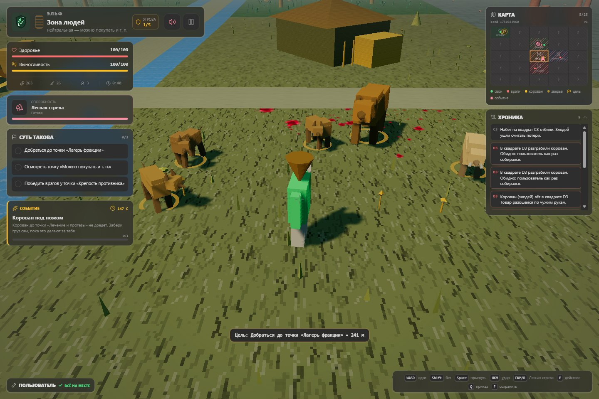
У домиков появились местные
В поселениях теперь кто-то живёт: жители ходят от домика к домику и делают вид, что заняты. Когда рядом начинается драка, они разбегаются по кустам. Их можно потерять — зверьё и налётчики этим пользуются, — а можно и убить самому: игра за это не даст ни золота, ни достижения, только неодобрительную строчку.
Насколько поселение оживлённое, зависит от того, как ему живётся: квадрат, который вчера пережил набег, заметно тише соседнего. Ночью зажигаются костры, у патрулей появляются факелы, по полям бродят олени, из травы взлетают птицы, а на телах рассаживаются вороны. Никакой пользы — просто мир перестал выглядеть пустым.
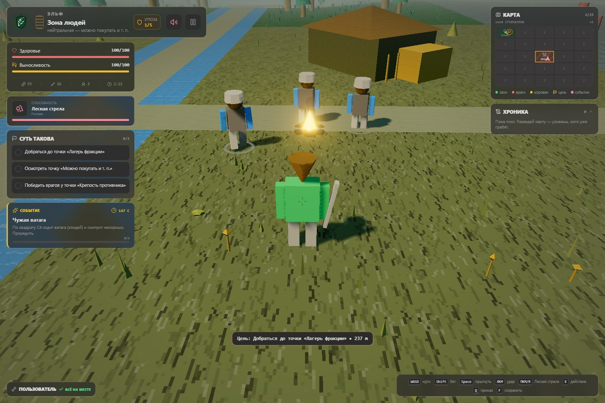
Враги научились бояться и звать своих
Противники перестали быть одинаковыми болванчиками, которые бегут в лоб. Они выбирают, на кого навалиться, заходят с разных сторон вместо очереди у одной точки и замечают, что происходит рядом: увидел одного — подтянулись остальные.
Появилась и мораль. Раненый одиночка может сорваться и убежать, стая рассыпается, если потеряла своих, а командир умеет наорать и вернуть беглеца в строй. Командиры и чемпионы, к счастью, не бегают никогда — иначе за ними пришлось бы гоняться по всей карте.
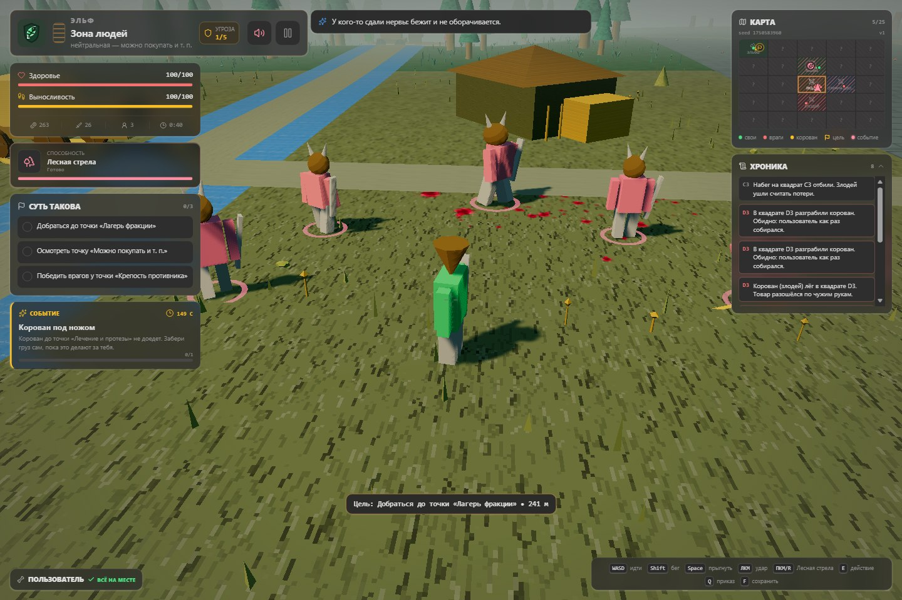
Драка стала громче, а увечья — обиднее
У каждой стороны появился свой приём, у ударов — подготовка, откат и отбрасывание, а у попаданий — вспышки, линии скорости, звук и короткие акценты камеры. Добыча вылетает из противника, светится по редкости и подаётся отдельной карточкой. Иногда игра честно пишет «БАБАХ», и это приятно.
Обещание «не только убить, но и отрубить руку» тоже стало заметнее. Руки, ноги и глаза теперь показаны отдельной панелью: целы, ранены или утрачены. Раны накапливаются, кровотечение не проходит само, а протез — не косметика, а способ доиграть поход.
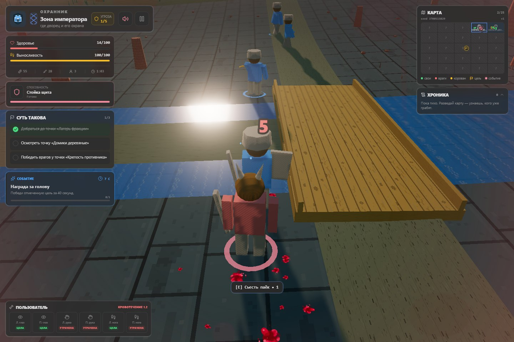
Пользователь ходит не один
Каждый поход начинается с трёх спутников, и состав сразу выдаёт характер стороны: эльфы берут разведчиков и лучника, охрана дворца — солдат, злодей выходит с приспешником, громилой и стрелком. Спасённые пленники могут присоединиться по дороге.
Одной кнопкой отряд собирается рядом, отставшие ускоряются, а перед дракой сначала стараются вернуться к герою. Здоровье и положение спутников сохраняются вместе с походом, так что у отряда появляется собственная история — обычно про то, как лучник отстал ровно тогда, когда был нужнее всего.

Погода, ночь и всё, что мешает жить
День сменяется ночью, солнце уступает луне и звёздам, факелы после заката становятся полезными. В лесу идёт дождь, у форта метёт снег, облачность приглушает свет, ветер качает траву. В непогоду даже противники горбятся и идут медленнее.
Земля покрыта процедурными узорами, леса собираются из объёмных деревьев, у дорог есть колеи, у воды — течение, под ногами растут трава, папоротники, цветы и камни. Если хочется картинки поспокойнее, время суток, погоду, свечение, контуры и растительность можно выключить по отдельности — на то, что происходит в мире, это больше не влияет.
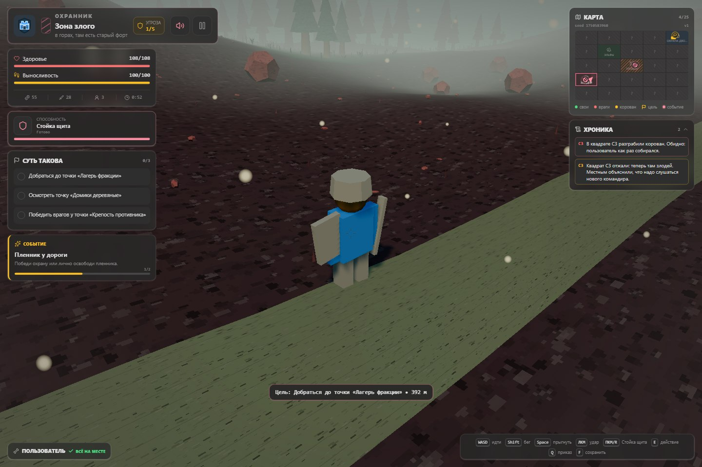
У трёх сторон появились лица
Лист лесных эльфов, крепость охраны дворца и череп злодея встречают игрока ещё в меню и дальше сопровождают выбранную сторону на карте, в активном походе и в истории забегов. Панорама с лесом, корованом, лагерем и дворцом собирает весь конфликт в одну картинку.

Музыка слышит, что происходит
У каждой фракции своя тема со своим темпом и набором инструментов, а лес, нейтральные земли, дворец и форт меняют её оттенок. Спокойное исследование звучит просторно, замеченный враг добавляет напряжение, драка уплотняет бас и ударные, а чемпион выводит тему на максимум.
- Спокойный мирИсследование
- Враг рядомТревога
- Есть контактБой
- Особая цельЧемпион
Переходы случаются на границе такта, поэтому одна длинная композиция развивается вместе со сценой, а не обрывается ради другого файла. Чем выше общая угроза кампании, тем настойчивее ритм.
Даже проигранный поход что-то оставляет
Забег можно приостановить и продолжить позже. Победы, поражения и брошенные походы попадают в историю, а постоянный профиль копит валюту на стартовые дары: один открывает соседние земли, другой добавляет припасы, третий — здоровье или заточенное оружие с самого начала.
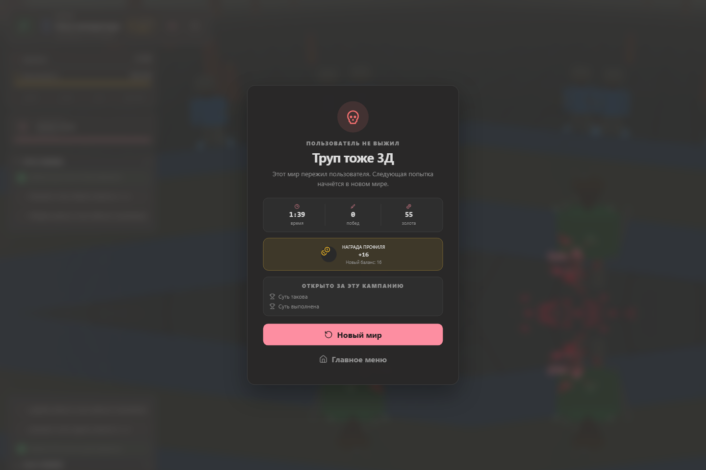
Достижений — 58 в девяти категориях, и следят они за тем, что действительно произошло: кого победили, что купили, сколько корованов ограбили, какие травмы пережили и какой стороной дошли до финала. Среди них есть «Суть такова», «Труп тоже 3Д», «Всего в игре 4 зоны», «Я джва года хочу» и, конечно, «Грабить корованы».
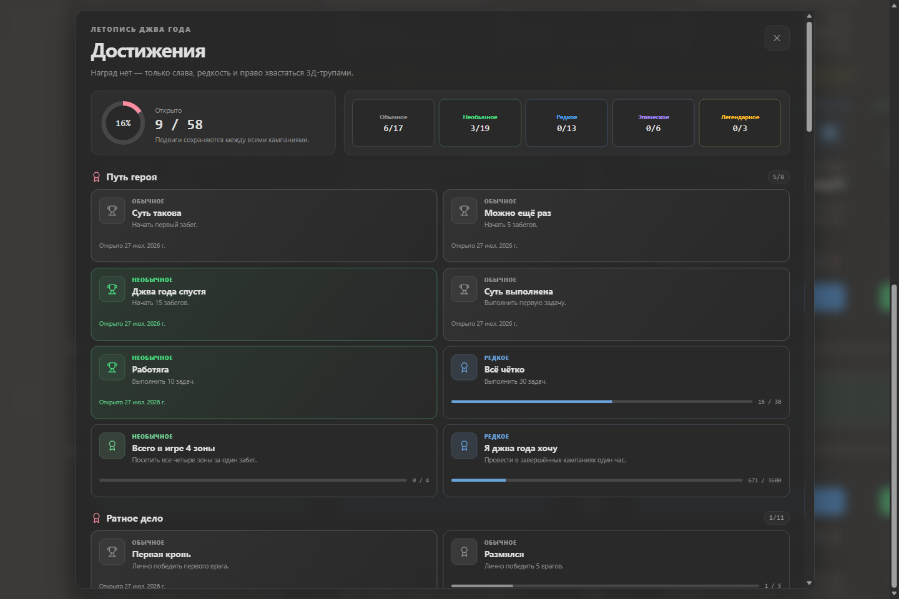
Коротко: было и стало
| Что сравниваем | Первая версия | Сейчас |
|---|---|---|
| Карта похода | 4 связанные зоны | 25 регионов из seed |
| Начало кампании | Выбор фракции | Фракция, seed и стартовый дар |
| Остальной мир | Ждёт пользователя | Воюет, горит и грабит сам |
| Кто в мире живёт | Три стороны конфликта | Ещё зверьё, местные и живность |
| Корованы | Ходят по кругу | Едут по дорогам с охраной |
| Враги | Бегут в лоб до конца | Обходят, зовут своих и сбегают |
| Атмосфера | Постоянное время суток | День, ночь, дождь, снег и ветер |
| Между походами | Одно сохранение | Профиль, история, дары и 58 достижений |
| Музыка | 8-битные темы фракций | Реакция на место, угрозу и бой |
Главное изменение в таблицу не помещается: после похода остаётся история, которую можно пересказать. Где прошла река, кого удалось спасти, какой спутник дожил до финала, чьи домики сгорели без вас и какой seed больше никогда не стоит запускать без крепкого снаряжения.
Корованы всё ещё можно грабить
Обещание из письма никуда не делось. Всё так же можно играть лесными эльфами, охраной дворца или злодеем; слушаться командира или быть самому себе командиром; ходить на набеги, покупать и т. п., терять части тела, ставить протезы и в конце концов ограбить корован.
Только теперь до корована ещё надо дожить, дойти через незнакомый мир и успеть раньше тех, кто занимается этим без вас. Новый seed — новая карта, новые неприятности и новый повод сказать своим войскам: «За мной, на дворец!»
Играть в «КОРОВАНЫ»